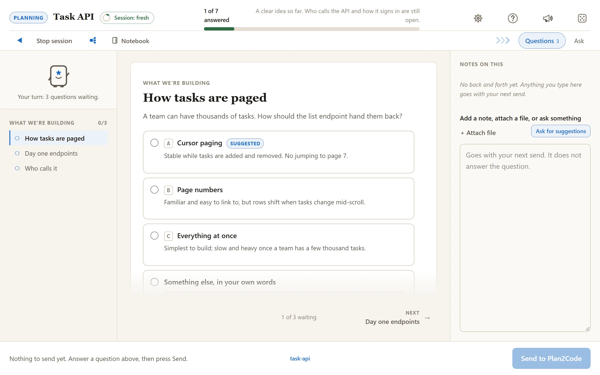

Pathfinder
A foggy idea becomes a clear list of decisions, settled one question at a time. The agent asks a few at a time, each option with its trade-off written under it, and you pick. Skip it when you already know what you want.
/plan2code-0-pathfinder
